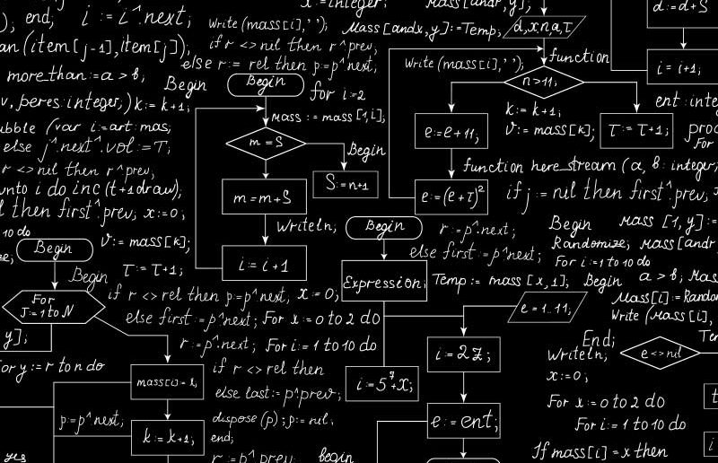

Capitolo 4
GLI ALGORIRTMI E LA PROGRAMAZIONE
Indice
Link interni
Gli algoritmi
Modellazione Algoritmi
problema al programma
La programmazione
Gli algoritmi

Cos'è un algoritmo?
Un algoritmo è una sequenza finita di istruzioni precise, non ambigue e ordinate che permette di risolvere un problema o svolgere un compito, partendo da dati iniziali per arrivare a un risultato.
Gli algoritmi sono utilizzati in diversi ambiti, dalla matematica all’informatica, e rappresentano la base del funzionamento dei programmi software.
Un buon algoritmo deve essere chiaro, efficiente e corretto, garantendo un risultato preciso in un numero finito di passi.
Può essere espresso in vari modi, come tramite diagrammi di flusso, pseudocodice o linguaggi di programmazione.
Gli algoritmi vengono classificati in base alla loro complessità e al loro approccio risolutivo, come ad esempio algoritmi ricorsivi, greedy o di ricerca.
In altre parole:
Un algoritmo è una ricetta per raggiungere un obiettivo.
Caratteristiche fondamentali di un algoritmo:
Finitudine: deve terminare dopo un numero finito di passi.
Non ambiguità: ogni istruzione deve essere chiara e interpretabile in un solo modo.
Input: riceve uno o più dati iniziali.
Output: produce uno o più risultati finali.
Efficacia: ogni operazione deve essere semplice abbastanza da poter essere eseguita.
Esempio semplice di algoritmo:
Problema: Trovare il massimo tra due numeri.
Algoritmo:
1) Leggi i due numeri A e B.
2) Se A > B, allora il massimo è A.
3) Altrimenti il massimo è B.
4) Scrivi il massimo.
Modi per rappresentare un algoritmo:
In linguaggio naturale (come sopra)
Pseudocodice (più simile a un linguaggio di programmazione)
Diagramma di flusso (grafico)
Codice vero e proprio in un linguaggio (Python, C, ecc.)
Modellazione Algoritmi
Cos'è la modellazione degli algoritmi?
Modellare un algoritmo significa descrivere in modo formale e organizzato come si vuole risolvere un problema, prima di passare alla scrittura del codice vero e proprio.
Serve a chiarire i passaggi logici e a capire bene cosa deve essere fatto e in che ordine.
Esempio pratico di modellazione
Problema: Calcolare la somma dei primi N numeri naturali.
Modellazione:
Input: un numero intero N.
Output: la somma dei numeri da 1 a N.
Scomposizione:
Inizializza una variabile somma = 0.
Per ogni numero da 1 a N, aggiungilo a somma.
Pseudocodice:
Leggi N
somma ← 0
Per i da 1 a N
somma ← somma + i
Scrivi somma
Perché modellare un algoritmo?
Per evitare errori logici.
Per risparmiare tempo quando si scrive il codice.
Per comunicare meglio le idee ad altri programmatori.
Per ottimizzare la soluzione (fare algoritmi più veloci o più semplici).
problema al programma
Dal problema al programma: il percorso completo
In informatica, trasformare un problema in un programma significa passare attraverso una serie di fasi logiche che portano dalla comprensione del problema fino alla scrittura del codice eseguibile.
Ecco i passaggi fondamentali:
Problema ➡️ Analisi ➡️ Algoritmo ➡️ Codice ➡️ Test
La programmazione
La programmazione è il processo di scrittura, sviluppo e manutenzione di codice sorgente per creare software, applicazioni o sistemi informatici.
Attraverso l’uso di linguaggi di programmazione come Python, Java, C++ e molti altri, i programmatori traducono le soluzioni a problemi in istruzioni comprensibili dai computer.
La programmazione si basa su concetti fondamentali come variabili, strutture di controllo, funzioni e algoritmi, ed è utilizzata in numerosi ambiti, dall'intelligenza artificiale allo sviluppo web e mobile.
Una buona programmazione richiede logica, creatività e attenzione all’efficienza del codice per garantire prestazioni ottimali e facilità di manutenzione.
torna all'inizio
capitolo 1
capitolo 2
capitolo 3
capitolo 5